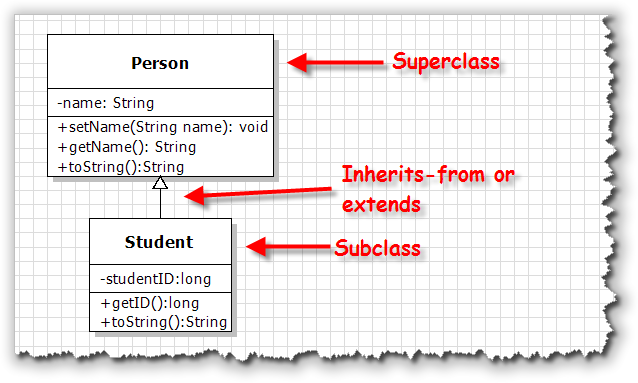

It's really tempting to dive right in and start by extending some of the ACM classes, making a new ImageBall or PlayingCard class, or perhaps fill in some of the missing geometric shapes; anyone up for a new GHexadecagon class?
The only problem with that strategy is that inheritance actually brings quite a few new possiblities into your programs, and each of those possibilities needs to be handled in a specific way. If we start with a more complex class, even though it might be more interesting, it's easy to miss the details that you really must master to make effective use of the object-oriented technique of inheritance.
So, instead of working with fun stuff, like card games and shooting down aliens, in this lesson I'll return to the old, boring finger-exercises type of examples that let you concentrate on one piece of the inheritance puzzle at a time.
When you create a new class using inheritance, you use the
extends keyword to specify the parent or
superclass when you define the child or subclass.
For our first example, let's look at a simplest possible class
that represents people: the Person class. Then,
we'll create a new kind of Person, the
Student.
Here's the UML (Unified Modeling Language) class diagram for
the two classes we'll start with:

Here's what you should notice about each of these classes. The Person class has a single attribute, name
which is stored as a String. The minus sign preceding
name tells us that the instance variable used to
store this attribute will be marked private.
The class has one mutator, setName() that allows
us to change the name of the Person. There is also
one accessor method, getName() which is a "getter"
method that allows us to read the value of the attribute. The
plus sign appearing before the method says that the method is
public. The void appearing at the
end of the entry is the method return type.
The toString() method is inherited from the Object
class, which the Person class implicitly inherits
from. Every class without an explicit extends clause
implicitly extends Object. The Person class
overrides the inherited implementation, which allows us to
print the person's name, instead of the address in memory where the
Person object is stored.
The Student class is a subclass of Person.
The hollow-headed arrow pointing from Student to
Person says that Student inherits
from or (in Java) extends the Person
class.
Student also has one private attribute, the
studentID which will be stored as a long.
The class has a mutator to get the studentID, but no methods to
set the ID. While a student might change their name (because of
marriage, for instance) they can never change their ID.
Like Person, the Student class also
overrides the inherited toString() method.